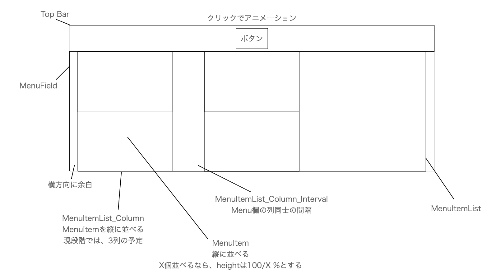

記事ページの管理を行います。TODO : SEO 対策のアレコレ、サイトマップの登録を行う。
上部のバーにはメニュー選択 UI を実装しています。構成は以下を参照です。

左の項目一覧に記事の表示切り替えを担当するボタンがあります。
sftg タグは、項目のサブ要素を書く際に使います。基本的に見た目重視の方針のため、内容は短く、個数も \(2\) 個程度が望ましいです。
index.html の記事項目の要素は以下の構成になります。
// カテゴリの定義 (カテゴリごとに CategoryField 要素を作成)
<div class = "CategoryField" id = "[カテゴリID-1]">
<div class = "LeftSizeFolderCategory">[カテゴリ名-1]</div>
// カテゴリに属するフォルダの宣言
<button class ='FolderItem' name = '[フォルダ名-1]' onclick = 'OpenFolder(event)'>🗂[タイトル1]</button>
<button class ='FolderItem' name = '[フォルダ名-2]' onclick = 'OpenFolder(event)'>🗂[タイトル2]</button>
</div>
<div class = "CategoryField" id = "[カテゴリID-2]">
<div class = "LeftSizeFolderCategory">[カテゴリ名-2]</div>
<button class ='FolderItem' name = '[フォルダ名-3]' onclick = 'OpenFolder(event)'>🗂[タイトル3]</button>
</div>
// カテゴリの定義で宣言したフォルダを定義
// フォルダの表示順は宣言の順になるので、ここでは順不同になる
<div class = "FolderDefinitionField">
<div class = "FolderContentsField" id = '[フォルダ名-1]' >
// フォルダでまとめる記事を列挙
<button class ='FileItem' name = '[記事HTMLへの相対パス-1]' onclick = 'OpenPage(event)'>📃[ファイルタイトル-1] <sftg>[タグ-1]</sftg> </button>
<button class ='FileItem' name = '[記事HTMLへの相対パス-2]' onclick = 'OpenPage(event)'>📃[ファイルタイトル-2] <sftg>[タグ-2]</sftg> </button>
</div>
<div class = "FolderContentsField" id = '[フォルダ名-2]' >
<button class ='FileItem' name = '[記事HTMLへの相対パス-3]' onclick = 'OpenPage(event)'>📃[ファイルタイトル-3] <sftg>[タグ-3]</sftg> <sftg>[タグ-4]</sftg> </button>
</div>
<div class = "FolderContentsField" id = '[フォルダ名-3]' >
<button class ='FileItem' name = '[記事HTMLへの相対パス-4]' onclick = 'OpenPage(event)'>📃[ファイルタイトル-4] <sftg>[タグ-5]</sftg> </button>
</div>
</div>
コンテンツの分類の階層としては カテゴリ/フォルダ/ファイル となっています。index.html では、先にカテゴリフィールド及びフォルダボタンを列挙した要素を書きます。ここでは、カテゴリ及びフォルダの表示順序の定義を行い、また、フォルダ名がこれから使用されることを宣言します。C++ の宣言みたいなものです。
その後、先に宣言したそれぞれのフォルダに対して、そのフォルダの中身を定義する部分を書きます。すでにフォルダの表示順は定義されているので、この部分の順序は順不同です。
記事の中にはスライドやソースコードを埋め込む機会がありますが、謎の思想によりすべて自前実装します。
記事でソースコードなどを表示するとき、以下のコード (code_to_html.py) を用いて code.txt のコードを <pre> タグ要素に変換する。pre タグのスタイルはカスタマイズしています。
html_code:str = "";
file = open("./code.txt","r");
lines = file.readlines();
file.close();
html_code += "<pre>"
for i in range(len(lines)):
line = lines[i];
line = line.replace('&' ,"&");
line = line.replace('<',"<");
line = line.replace('>' ,">");
line = line.replace(' '," ");
line = line.replace('"' ,""");
line = line.replace('©' ,"©");
line = line.replace("'" ,"'");
# 行末は改行コードなのでそれを省く
if(i+1 != len(lines)) :
html_code += line[0:len(line)-1];
html_code += "<br>";
else :
html_code += line;
html_code += "</pre>";
file = open("./code.txt","w");
file.write(html_code);
file.flush();
file.close();
文章に改行のないコードを登場させるときは <code></code> でコードを囲う。code タグのスタイルはカスタマイズしています。
スライドを画像としてエクスポートして、以下のフォーマットで挿入します。スライドの画像のサイズはエクスポートした時点から変更しないでください。
<div class = "slide_content_field">
<!-- ページ番号を管理するためだけのdiv (中身の数値を JS が参照する) -->
<div class = "slide_pagenum_store" id = "[スライド識別 ID]"></div>
<!-- タイトル -->
<div class = "slide_title">コンテンツハイライト</div>
<!-- 内容 -->
<img src="[1 ページ目の画像へのリンク]" class = "[スライド識別 ID]">
<img src="[2 ページ目の画像へのリンク]" class = "[スライド識別 ID]">
<img src="[3 ページ目の画像へのリンク]" class = "[スライド識別 ID]">
<img src="[4 ページ目の画像へのリンク]" class = "[スライド識別 ID]">
<!-- ボタンなどのスライド操作用ツールバー-->
<div class = "slide_button_field">
<button onclick="select_back(event)" name = "[スライド識別 ID]" class = "slide_back_button"></button>
<div class = "slide_pagenum_field" title = "[スライド識別 ID]" ></div>
<button onclick="select_next(event)" name = "[スライド識別 ID]" class = "slide_next_button"></button>
</div>
</div>
スライドの操作のため、各スライドには ID が割り振られます。スライドのページはこの ID によってグルーピングされ、JavaScript 側からもこの ID を参照して操作を実行します。そのため、当然 1 つの記事に複数のスライドを埋め込む時、同じ識別 ID を用いることは出来ません。
ちなみに JavaScript は以下のような感じ。
const target_SampleCodeField = "SampleCode";
const target_HideCheckButton = "HideCheck";
initialize_slide();
// スライド表示の初期状態設定
function initialize_slide(){
// ページ内のすべてのスライドそれぞれの代表要素 (ページ番号管理) を取得
const slide_counters = document.getElementsByClassName("slide_pagenum_store");
// それぞれのスライドについて、ページ表示を 1 ページ目で設定
for(var i = 0 ; i < slide_counters.length ; i++){
const pagenum = 0;
const slidename = slide_counters[i].id;
slide_counters[i].innerText = pagenum;
var PageList = document.getElementsByClassName(slidename);
if(PageList.length == 0)continue;
PageList[pagenum].style.display = "block";
set_slide_pagenum(slidename , pagenum+1 , PageList.length);
}
}
// slidename のスライドのページ番号表示を a/b に
function set_slide_pagenum(slidename , a , b){
var display_field = document.getElementsByClassName("slide_pagenum_field");
for(var i = 0 ; i < display_field.length ; i++){
if(display_field[i].title != slidename)continue;// 対象と関係ない部分は無視
display_field[i].innerText = "(" + a + "/" + b + ")";
}
}
// スライドを制御 : div 要素の name でスライド名を定義。 id = スライド名 の要素の innerText がページ番号に対応
function select_next(e){
var PageList = document.getElementsByClassName(e.target.name);
var counter_div = document.getElementById(e.target.name);
var pagenum = parseInt(counter_div.innerText);
const PageList_size = PageList.length;
if(pagenum==PageList_size-1)return;
//close current page
PageList[pagenum].style.display = "none";
pagenum++;
//display next page
PageList[pagenum].style.display = "block";
counter_div.innerText = pagenum;//カウンターを更新
// ページ移動した場合のみ変更 (& 1-index に変換)
set_slide_pagenum(e.target.name , pagenum+1 , PageList_size);
}
function select_back(e){
var PageList = document.getElementsByClassName(e.target.name);
var counter_div = document.getElementById(e.target.name);
var pagenum = parseInt(counter_div.innerText);
const PageList_size = PageList.length;
if(pagenum==0)return;
//close current page
PageList[pagenum].style.display = "none";
pagenum--;
//display next page
PageList[pagenum].style.display = "block";
counter_div.innerText = pagenum;//カウンターを更新
// ページ移動した場合のみ変更 (& 1-index に変換)
set_slide_pagenum(e.target.name , pagenum+1 , PageList_size);
}
記事の内容を補足する内容を記述する際は、<div class = "Highlight"> ... </div> のなかに Tips セクションまたは Column セクションを設けます。それぞれ、以下の規則で使い分けます。
<groupblock> で囲うと、
FlowBlock クラスは、
HTML をすべて構築してから JavaScript を呼びたいので、JavaScript の外部ファイルは HTML の末尾で読んでいるよ!!!